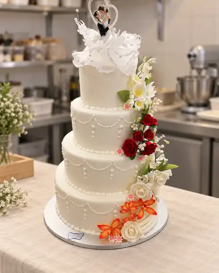
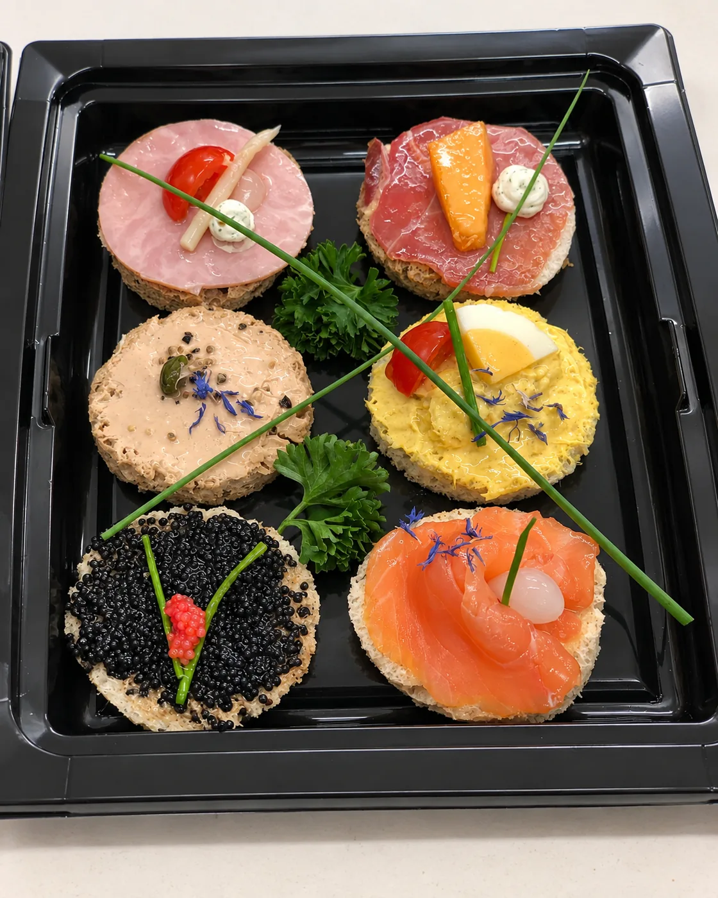
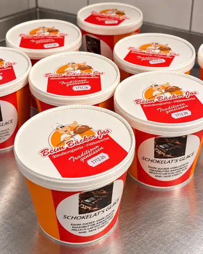
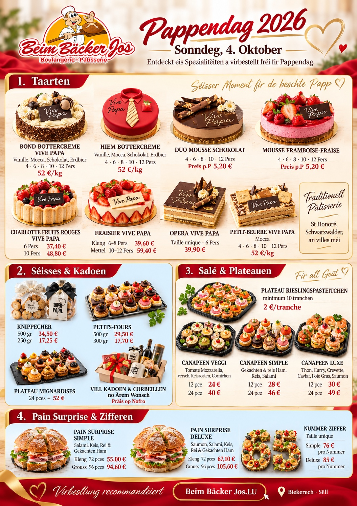

Brout & Baguetten
Klassesch, rustikal a fir den Alldag.
Brout, Viennoiserie, Pâtisserie an Torten – mat Erfahrung, regionale Wuerzelen a Léift fir d’Bäckerhandwierk.
Mir stinn fir eng Bäckerei, bei där Qualitéit, Perséinlechkeet an d’Freed um Produkt am Mëttelpunkt stinn. Vum deegleche Brout bis zur Torte fir e spezielle Moment: eis Clientë sollen ëmmer e Grond hunn, gär zeréckzekommen.

Klassiker fir all Dag, séiss Momenter, salzeg Pausen an individuell Bestellungen – eng Bäckerei soll méi sinn ewéi nëmme Brout.
Klassesch, rustikal a fir den Alldag.

Croissants, Mëtschen a séiss Klassiker.

Fir kleng Freed a grouss Momenter.

Fir eng séier a gutt Paus.

Kleng, fein a perfekt fir ze deelen.

Eng séiss Belounung fir zwëschenduerch.
Gebuertsdag, Kommunioun, Hochzäit, Jubiläum oder Firmenevent: fir speziell Geleeënheete kënne mir d’Bestellung am Viraus ofschwätzen. Ruff eis einfach um Standuert vun denger Wiel un.
Eng schéin Unerkennung fir d’Handwierk an d’Aarbecht hannert engem saisonale Lëtzebuerger Klassiker.
Wiel deen Standuert, deen am beschte passt. Mat engem Klick kanns du uruffen oder d’Route direkt opmaachen.
Keng anonym Hotline: bestell direkt do, wou d’Equipe dech och empfänkt.
Vum Kaffi moies bis zur individueller Torte fir e wichtegen Dag.
Biekerech a Sëll – kuerz Weeër, regional Verankerung a lokal Clienten.
Jo. Fir Torten a Bestellunge fir speziell Geleeënheeten ruff w.e.g. fréi genuch zu Biekerech oder Sëll un, fir d’Detailer ofzeschwätzen.
Jo. Eis Produkter kënnen an de Standuerter matgeholl ginn.
Zu Biekerech an der Huewelerstrooss 37 an zu Sëll an der Haaptstrooss 14A.
Am séiersten geet et per Telefon direkt beim Standuert. D’Nummeren an d’Route fënns du hei op der Säit.

Ausgewählte Arbeiten aus unserer Backstube.
Sorgfältig vorbereitet und professionell angerichtet.
Vun der Produktioun bis an d’Verpakung: en Abléck an eis Aarbecht.